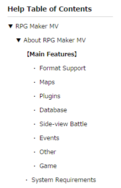
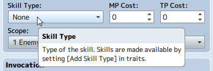

RPG Maker MV Help
Explanations regarding functions included in RPG Maker MV can be found in this Help section.
The Help Table of Contents can be found on the left side of this window. Please choose which item you wish to view from here.

Additionally, pop-up hints are also available when using this software for most items. By hovering your cursor over an item for a brief time in the editor, a simple explanation will be displayed, so please feel free to take advantage of this as well.
